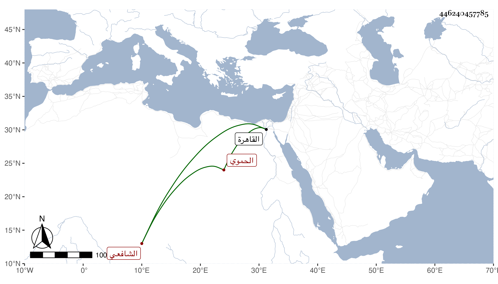

0902Sakhawi.DawLamic.ITO20230111-ara1.EIS1600.446240457785
Biography ID: 446240457785
638
محمد بن عمر بن أحمد بن المبارك الكمال بن الزين الحموي الشافعي الماضي أبوه وابنه عمر ويعرف كهو بابن الخرزي بمعجمتين بينهما مهملة قدم مع أبيه القاهرة غير مرة منها في سنة أربعين وسمع فيها معه على شيخنا في الدارقطني ثم على أربعين ختم البخاري بالظاهرية القديمة وولي قضاء بلده عوضا عن البدر بن مغلي فدام دون سنة ثم صرف بالزين فرج بن السابق واستمر مصروفا حتى مات في أحد الربيعين سنة ثلاث وتسعين عن نحو الثمانين ، وكان كأبيه خيرا بارعا في الطب وكذا في كبر العمامة والاصفرار ونحوهما . ومات ابنه الزين عمر الذي ليس له غيره بعده بثلث سنة عن بضع وثلاثين ولم يكن كهما رحمهم الله .
